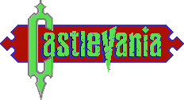Castlevania
 Akumajō Dracula
Akumajō Dracula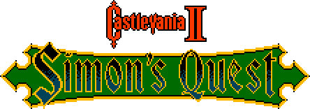Castlevania II: Simon's Quest
Dracula II: Noroi no Fūin
Castlevania: The Adventure
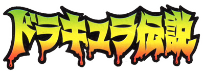Dracula Densetsu
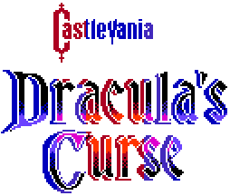Castlevania III: Dracula's Curse
Akumajō Densetsu
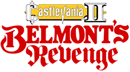Castlevania II: Belmont's Revenge
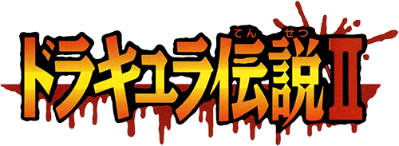Dracula Densetsu II
-
 Akumajō Dracula X: Chi no Rondo
Akumajō Dracula X: Chi no Rondo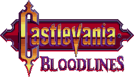Castlevania: Bloodlines
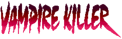Vampire Killer
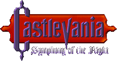Castlevania: Symphony of the Night
Akumajō Dracula X: Gekka no Yasōkyoku
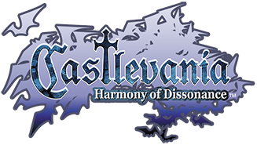Castlevania: Harmony of Dissonance
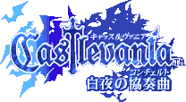Byakuya no Concerto
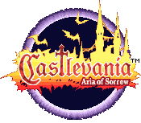Castlevania: Aria of Sorrow
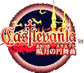Akatsuki no Minuet
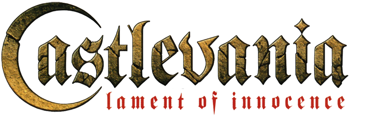Castlevania: Lament of Innocence
 Castlevania
Castlevania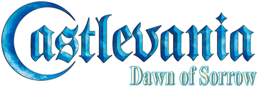Castlevania: Dawn of Sorrow
Akumajō Dracula: Sōgetsu no Jūjika
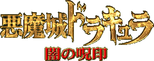Akumajō Dracula: Yami no Juin
Akumajō Dracula: Gallery of Labyrinth
Castlevania: Order of Ecclesia
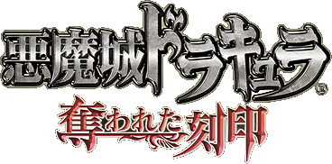Akumajō Dracula: Ubawareta Kokuin